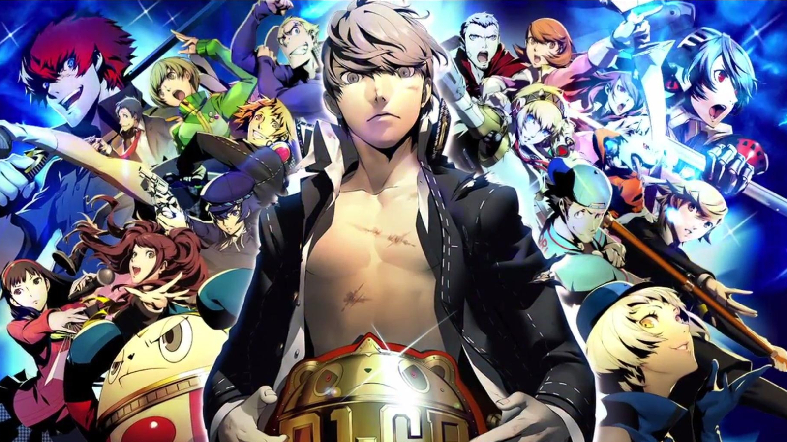
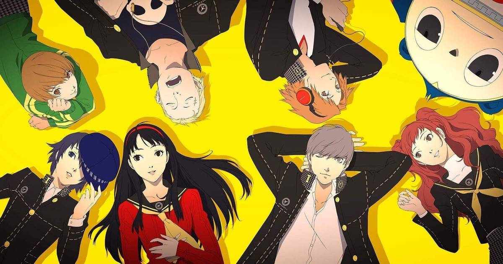
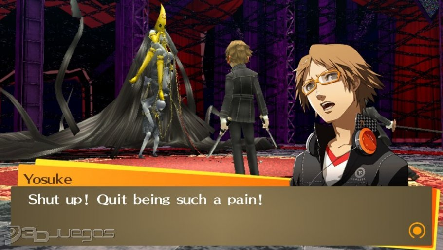
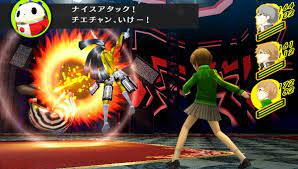

Shin Megami Tensei: Persona 4 es un videojuego de rol desarrollado y publicado por Atlus para la consola de PlayStation 2, y cronologicamente es la quinta entrega
dentro de la serie de Persona. Asimismo, este titulo forma parte de la franquicia Megami Tensei. En el mes de junio del 2008 se publico en Japon, despues tuvo su
lanzamiento durante diciembre del mismo ano en America del Norte, en Europa se presento hasta marzo del 2009. Persona 4 tiene lugar en un campo japones ficticio y
esta estrechamente relacionado con los juegos anteriores de Persona. El protagonista es un estudiante de preparatoria que decide irse al campo durante un ano. Se
involucra en investigaciones de misteriosos homicidios aportando una ventaja con el poder de las Personas. El juego cuenta con un sistema para pronosticar el tiempo
con eventos especiales que ocurren durante los dias brumosos, esto reemplaza el sistema "fases de luna" que tienen los juegos anteriores.

JUGABILIDAD
Persona 4 fusiona elementos RPG tradicionales con aspectos de simulacion. El jugador controla al protagonista, un adolescente, cuyo nombre es dado por el jugador,
que va hacia el pueblo de Inaba para pasar un ano. La jugabilidad se divide entre el mundo real de Inaba, donde el protagonista puede llevar a cabo su vida cotidiana,
y el misterioso "Mundo TV" en el cual se encuentran varias mazmorras donde las criaturas conocidas como Sombras estan esperando. A excepcion de los eventos en el guion
como la trama o sucesos especiales, los jugadores pueden pasar el dia haciendo cualquier actividad: unirse a un club escolar, tener empleos de medio tiempo
leer libros, o explorar las mazmorras del Mundo TV para conseguir experiencia y objetos. Los dias tienen, a su vez, otras divisiones en horas del dia, la mas
frecuente siendo "Despues de la escuela/ temprano" y "Noche", las actividades que se realicen causaran que el tiempo vaya avanzando. Ciertas actividades estan
restringidas a solo un espacio de tiempo en el dia, dias de la semana y tipo de clima, gran parte de las actividad durante la noche no estaran disponibles si el
jugador entra al Mundo TV durante el dia. Asimismo, algunas actividades y dialogos pueden estar limitadas por los 5 atributos del protagonista: Entendimiento,
Diligencia, Valor, Conocimmiento y Expresion, las cuales pueden mejorarse tras realizar una actividad de mejora. Mientras que los jugadores son libres de escoger
que hacer en el dia, si fallan en rescatar a una persona atrapada en el Mundo TV antes de que la neblina aparezca, esto sucede cuando pasan varios dias de lluvia
ese personaje sera asesinado por una Sombra, causando el fin de la partida y forzando al jugador reiniciar desde su ultimo guardado o semana de juego. Conforme el
juego progresa, el protagonista va formando amistades con otros personajes, se les conoce como "Lazos Sociales" y cada una de esas amistades esta representada en
cartas de Tarot. Mientras mas fuertes sean las amistades, los "Lazos Sociales" ascenderan en rango lo que da aspectos especiales cuando se crean nuevas Personas en
la Habitacion de Terciopelo. Del mismo modo, incrementar los "Lazos Sociales" con cualquier personaje que este en el equipo principal, generara habilidades
adicionales como la capacidad de hacer un ataque-de-continuacion u otra habilidad extra de sus Personas.El principal objetivo del juego reside en las Personas, avatares proyectados desde el interior de los personajes, se asemejan a figuras mitologicas y representan
las mascaras que la humanidad usa para enfrentarse a los obstaculos de la vida. Cada Persona tiene sus propias habilidades, así como fortalezas y debilidades a
ciertos atributos. Conforme las Personas van adquiriendo experiencia despues de una batalla y suben de nivel, pueden aprender nuevas aptitudes, ya sea ofensivas
o de apoyo, las cuales se usan en batalla, o habilidades pasivas que le dan al personaje beneficios. Las Personas pueden equiparse hasta con 8 habilidades al mismo
tiempo, cuando una de estas se vuelve vieja, se puede olvidar y aprender una nueva. Cada personaje en el equipo tiene su propia y unica Persona, estos pueden volverse
en una version mas fuerte al maximizar los lazos de amistad que se tiene con los personajes; el protagonista cuenta con una habilidad exclusiva llamada "Wild Card"
que le permite tener varias Personas y cambiarlas durante combate para obtener diferentes movimientos y estrategias. El jugador puede conseguir nuevas Personas
durante el Tiempo de Barajar, el protagonista pueden llevar mas Personas conforme sube de nivel. Fuera de las mazmorras, los jugadoras podran acceder a la Habitacion
de Terciopelo donde pueden crear nuevas Personas o invocar las que ya se tienen, por una cuota pequena. Nuevas Personas son creadas tras fusionar dos o mas criaturas
estas nuevas versiones adquieren las habilidades de los monstruos sacrificados en la fusion. El nivel de fuerza que tengan las Personas al crearse esta limitado por el
nivel que tenga el protagonista. Si el protagonista crece lo suficiente su lazo de amistad con un alguien del Arcano Mayor (Tarot), una Persona relacionada con esa
carta de tarot recibira un bono durante la creacion del mismo.Dentro del Mundo TV el jugador armara su equipo, consistiendo en el protagonista y otros tres personajes, para explorar las mazmorras construidas aleatoriamente
cada una con características especiales de acuerdo a la victima secuestrada. En cada piso de la mazmorra, el jugador encontrara Sombras vagando, asi como tesoros que
contienen objetos y equipamiento. Los jugadores progresarán por los pisos tras encontrar escaleras que los lleven al siguiente espacio hasta llegar al ultimo nivel
donde pelearan con el Jefe. Entraran en la fase de combate cuando el personaje se acerca a los enemigos. Los personajes pueden sacar ventaja cuando atacan por la
espalda a una Sombra, del mismo modo, si un enemigo ataca por detras al equipo, le dara a las Sombras una ventaja. Similar al sistema "Press Turn" de otros titulos
Shin Megami Tensei, las batallas están basadas por turnos, los personajes pelean utilizando armas, objetos o las habilidades especiales de sus Personas. Con excepcion
del protagonista que es controlado directamente, a los otros miembros del equipo se les puede dar ordenes o asignar "tacticas" alterando su forma de ataque. Si el
protagonista agota la barra de vida (HP), el juego acabara, mandando al jugador a la pantalla de inicio.Las habilidades ofensivas tienen una cadena de atributos/efectos: Fisicos, Fuego, Hielo, Viento, Electricidad, Luz, Oscuridad y Todopoderoso. Del mismo modo
los enemigos tienen atributos y los miembros del equipo tambien tienen fortalezas y debilidades ante ciertos tipos de ataque, todo depende de la Persona o el
equipamiento que tengan. Al aprovechar las debilidades de las criaturas o realizar un ataque critico, el jugador puede noquearlos dando al personaje en turno
otro movimiento. Asimismo, los enemigos pueden conseguir un movimiento adicional despues de atacar a un personaje con el atributo al cual es debil. Si el jugador
noquea a todos los enemigos, este conseguira la oportunidad de ejecutar un movimiento llamado "Ataque total" donde todos los personajes se arrojan contra las
criaturas causando una gran cantidad de daño. Despues de la fase combate, el jugador puede adquirir puntos de experiencia, dinero y objetos como recompensa.
A veces despues de una batalla, el jugador puede participar en un mini juego llamado "Tiempo de Barajar" y "Posibilidad Arcana", estos se caracterizan por darle
al jugador nuevas Personas o una serie de bonos.

ESPACIO Y PERSONAJES

Persona 4 se lleva a cabo en un pueblo ficticio de Japon conocido como Inaba , y se encuentra en unas llanuras de inundacion; tiene su propio instituto escolar y
distritos de venta. Homicidios inexplicables se han estado presentando en este pequeño pueblo, donde los cuerpos de las victimas aparecen colgando de antenas de
television; se desconoce el motivo/causa de su muerte. Al mismo tiempo, corre el rumor de que ver la tele apagada en una medianoche lluviosa revelara el alma gemela
de esa persona. El juego sigue a los personajes al Mundo TV, una dimension lleno de criaturas llamadas Sombras.El protagonista es un joven de preparatoria, llamado Yu Narukami, quien recientemente se movio de la ciudad hacia el pueblo Inaba
para ir a la escuela. Alli, procede a volverse amigo de Yosuke Hanamura, el hijo, un tanto torpe, del manager del local Junes; Chie Satonaka, una chica carismatica
con alto interes en las artes marciales; y Yukiko Amagi, una chica calmada y refinada que ayuda en la posada familiar. Despues de unos dias dentro del juego, el
protagonista, Yosuke y Chie siguen el rumor del "Canal de medianoche", los lleva a descubrir el Mundo TV y conocer a Teddie, una criatura amigable que aparece como
un disfraz de oso. Usando las Personas, los estudiantes forman el Equipo de Investigacion (E.I) para descubrir la conexion entre la dimension TV y los asesinatos
y posiblemente capturar al culpable de todo. Al progresar en la historia, mas personajes se anaden al E.I incluyendo a Kanji Tatsumi, un joven delincuente que posee
talento para los pasatiempos de las chicas; Rise Kujikawa, una idol adolescente en busca de su identidad, se muda a Inaba como estudiante de intercambio; y Naoto
Shirogane, una joven detective investigando el caso junto con la policia local, viste de hombre y se presenta como uno debido a su miedo por ser rechazada.

RECREACIONES Y DERIVACIONES
Persona 4 Golden
Persona 4 Golden, se estreno en Japon bajo el nombre de Persona 4: The Golden, fue anunciado en agosto de 2011 como una version adaptada de Persona 4 para la consola
portatil PlayStation Vita. Se tenia pensando por Atlus, en que fuera un titulo exclusivo para PlayStation Portable, asi como Persona 3 Portable, con lo cual el equipo
temia que tuvieran la obligación de remover ciertos aspectos del juego de la version original de PlayStation 2. Sin embargo, el Vita tuvo las suficiente capacidad
para que Atlus expandiera el juego. Por lo tanto, se expandio anadiendo nuevas caracteristicas y elementos de la historia. Un nuevo personaje llamado Marie fue
anadida a la historia. Personas adicionales, vestimentas para los personajes y otras lineas de dialogo junto con escenas animadas fueron incluidas, al igual que dos
nuevos "Lazos Sociales" para Marie y Tohru Adachi. El juego cuenta con el soporte a internet del Vita para que los jugadores pidan ayuda durante la fase de combate
en las mazmorras. Otra caracteristica nueva es un jardin que produce objetos para que el jugador use durante sus aventuras. Este titulo se lanzo en junio 14
2012 para Japon. Persona 4: The Golden tambien es el primer juego de la franquicia Persona en ser estrenado en chino tradicional.
El lanzamiento de Persona 4: The Golden resulto en un incremento de ventas para la consola portatil PlayStation Vita. Durante su semana de debut, el juego vendio 137,076
unidades en Japon. Media Create declara que las ventas de este titulo superan otros de la franquicia debido al alcance de Persona 4 en otras plataformas y medios de
publicacion. A mediados de julio de 2012, ya habia venido 193,412 unidades en Japon. Este fue el octavo juego mas comprado en la tienda digital japonesa de la
consola Vita en 2013. En abril de 2014, el juego habia entregado 350,000 copias en Japon, y mas de 700,000 copias alrededor del mundo en diciembre de 2013.La banda sonora de esta version salio el 27 de junio de 2012 para Japon; consiste en un solo disco con 15 canciones nuevas compuestas por Shoji Meguro y Atsushi
Kitajoh.En una entrevista con RPGamer en E3 2012, Atlus USA revelo que en cuanto al contenido extra en el "Canal de television" especial, la version americana tendria todo
el contendio que la japonesa con excepcion de dos comerciales faltantes. Se estreno para la PlayStation Vita en noviembre 20, 2012. 10,000 copia especiales
acompanaron el lanzamiento en noviembre 20, 2012, llamadas "Solid Gold Premium Edition". NIS America lanzo en juego para Europa en febrero 22, 2013. Persona 4 Arena
Una secuela presentada como juego de peleas, Persona 4 Arena, conocido en Japon como Persona 4: The Ultimate in Mayonaka Arena, fue desarrollado por Arc System Works
la compania reconocida por crear las series de Guilty Gear y BlazBlue, y salio en 2012 para las arcade, PlayStation 3 y Xbox 360. Como el anime, el protagonista es
llamado Yu Narukami. Los personajes de Persona 3 Aigis, Mitsuru, Elizabeth, y Akihiko tambien estan en este titulo. La cronologia sigue dos meses despues del
Verdadero Final del juego original, los miembros del Equipo de Investigacion son jalados de vuelta al "Mundo TV" y forzados a pelear es un torneo llamado "P-1 Grand
Prix" su anfitrion es Teddie.La secuela a este titulo es, Persona 4 Arena Ultimax, se lanzo en los arcade japoneses en noviembre de 2013, para PlayStation 3 y Xbox 360 mas tarde en 2014.
Tiene lugar un dia despues de los eventos en Arena, el Equipo de Investigacion debe derrotar a sus Shadows en este nuevo torneo, el "P-1 Climax", de esa forma
salvar a los Operativos Sombra y detener la propagacion de una misteriosa neblina rojiza que rodea Inaba. El juego anade 7 personajes jugables de Persona 3 y
Persona 4 Golden, asi como un nuevo antagonista, Sho Minazuki. Persona Q: Shadow of the Labyrinth
Persona Q: Shadow of the Labyrinth es un juego de RPG de calabozos desarrollado para Nintendo 3DS, el cual se caracteriza por tener personajes de Persona 3 y Persona 4
asi como mecanicas de juego provenientes de la franquicia de Etrian Odyssey. En la cronologia sus eventos estan en medio de Persona 4, el Equipo de Investigacion
son arrastrados a una dimension alterna de la escuela preparatoria Yasogami y tiene que trabajar en conjunto con los miembros de Equipo Especializado de Ejecucion
Extracurricular (SEES) para encontrar la forma de escapar. El juego se estreno en junio 5, 2014 para Japon, en America del Norte tuvo su lanzamiento en noviembre 25
2014, y en Europa el 28 de noviembre de 2014. Persona 4: Dancing All Night
Persona 4: Dancing All Night es un juego de ritmo desarrollado por Atlus para el PlayStation Vita, cuenta con canciones de la franquicia Persona. El juego tiene
lugar en la cronologia despues de medio ano de los eventos de Persona 4, mientras el Equipo de Investigacion observa dentro de un misterioso campo de baile llamado
"Midnight Stage", el secuestro a las chicas del grupo idol de Rise. El juego fue lanzando el 25 de junio del 2015 para Japon.
RANKINGS
Su calificacion esta vez fue de 93%, lo cual lo hace uno de
los juegos mejor valorados que existen